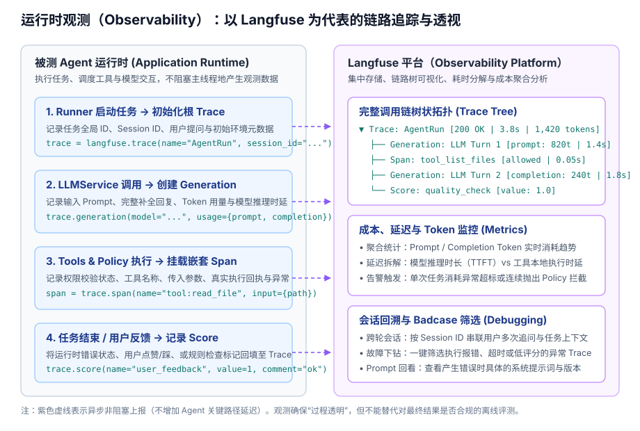

Observability: Runtime Telemetry & Tracing
1. Starting Problem: Why Traditional APM Fails for Agents
Traditional backend service architectures follow deterministic request-response paths: a gateway receives a request → routes to a handler → queries a database → returns a serialized response. In an autonomous Agent system, execution differs fundamentally:
- Dynamic Iterative Loops: Tasks evolve through multi-step cycles:
Model Reasoning → Tool Execution → Receipt Observation → Next Decision(ReAct loops). - Dynamic Contexts and Token Costs: Every turn introduces modified message arrays, and token usage compounds dynamically. Standard HTTP status codes tell you nothing about tokenomics or prompt drift.
- Expected Policy Interceptions: When Policy blocks a dangerous command, it is intentional protection, not a crash or 500 error.
Standard logging falls short: you observe high latency but cannot pinpoint where the model hesitated; you see high token bills but cannot identify which historical message inflated the prompt.
Expected Outcomes:
- Complete Call Tree Visualization: Every task run produces an inspectable Trace tree depicting model generations, tool invocations, and receipts in their natural hierarchy.
- Granular Token & Cost Auditing: Track prompt and completion tokens for every LLM invocation with automated cost and latency breakdown.
- Reproducible Debugging via Session Replays: Reconstruct the exact prompts and tool outputs that led to badcases.
- Zero Critical Path Overhead: Telemetry operates via non-blocking asynchronous workers, ensuring monitoring issues never stall the Agent loop.
2. Core Abstractions: Trace, Generation, Span & Score
Modern Agent observability standards (such as Langfuse and the OpenTelemetry GenAI Semantic Conventions) establish four unified primitives:
- Trace (Root Container):
- Represents a single user turn or complete Agent Run.
- Holds global metadata:
trace_id,session_id,user_id, initial prompt, final deliverable, and wall-clock latency.
- Generation (Model Interaction Node):
- Specifically tracks LLM API interactions.
- Stores the prompt message array, model completion, model name/version, token consumption breakdown, and time-to-first-token (TTFT).
- Span (Execution Segment):
- Tracks discrete runtime operations, including
tool_callexecutions,policy_checkdecisions, andcontext_compactionsteps. Captures inputs, outputs, timestamps, and error states.
- Tracks discrete runtime operations, including
- Score (Quality & Feedback Metric):
- Attaches discrete or continuous evaluations to Traces or Generations (e.g., user thumbs-up/down, automated safety checks, or rule ratings).
3. Architecture & Practice: Observability with Langfuse
Langfuse is a widely adopted open-source observability platform designed specifically for LLM applications and Agents. It supports instant self-hosting via Docker, is compatible with OpenTelemetry, and provides tailored call-tree visualizers.

Telemetry Architecture Trade-offs
| Approach | Mechanism | Key Benefits | Main Limitations |
|---|---|---|---|
| Structured Local Events (JSONL / SQLite) |
Append-only event streaming directly to disk files | Zero external services, minimal resource overhead, offline-friendly, easily greppable | Single-machine only; lacks multi-session analytics, search drill-downs, and visual dashboards |
| OpenTelemetry (GenAI Conventions) |
Inject context and export Spans to Jaeger/Tempo via OTLP | Vendor-neutral enterprise standard; unifies with microservice Prometheus/Grafana stacks | High setup overhead; standard APM dashboards are not optimized for multi-turn prompt trees |
| Dedicated Platform (Langfuse) |
Lightweight Python SDK or OTel exporter forwarding to Langfuse server | Turnkey Agent call-tree UI, prompt version tracking, real-time token cost computation, dataset curations | Requires maintaining dedicated server and PostgreSQL storage; requires data egress compliance checks |
4. Three Golden Rules for Agent Observability
- 1. Asynchronous & Non-blocking Telemetry:
- Agent reasoning and tool operations take seconds. Telemetry dispatches must execute in background worker threads or non-blocking queues.
- Network timeouts or server downtime in the observability stack must never raise exceptions into the main Agent execution loop.
- 2. Client-side Data Sanitization:
- Tools that read environment variables, configuration files, or source code may ingest database passwords, private keys, or API secrets.
- Regex-based scrubbers must sanitize credentials before payloads leave the application process.
- 3. Multi-turn Session Unification:
- In multi-turn conversations, every user question triggers an independent Agent Run (with a distinct
trace_id). - All runs within the same conversation must share a consistent
session_idto track cumulative token costs and context window growth over time.
- In multi-turn conversations, every user question triggers an independent Agent Run (with a distinct
5. Practical Integration: Hooking Telemetry into the Agent Runner
Within an Agent Harness, telemetry hooks can wrap execution cleanly without polluting business logic:
from langfuse import Langfuse
class ObservabilityRunner:
def __init__(self, inner_runner):
self.inner = inner_runner
self.langfuse = Langfuse()
def run_task(self, session_id: str, prompt: str):
# 1. Open root Trace container
trace = self.langfuse.trace(
name="AgentRun",
session_id=session_id,
input={"prompt": prompt}
)
try:
# 2. Attach model and tool callbacks
result = self.inner.run_task(
session_id=session_id,
prompt=prompt,
on_model_call=lambda req, resp: trace.generation(
name="ModelCall",
model=req.model,
input=req.messages,
output=resp.content,
usage={"prompt_tokens": resp.prompt_tokens, "completion_tokens": resp.completion_tokens}
),
on_tool_execute=lambda call_id, name, args, output: trace.span(
name=f"tool:{name}",
input=args,
output=output
)
)
# 3. Record task completion status
trace.update(output={"status": result.status, "answer": result.final_answer})
return result
except Exception as exc:
trace.update(output={"error": str(exc)}, level="ERROR")
raise
finally:
# 4. Asynchronously flush events
self.langfuse.flush()
6. Current Implementation & Evolutionary Roadmap
- Implemented (Stages 0–5):
- Console Telemetry & Step Progress: The Runner prints step progress, tool names, and receipts in the terminal in real time.
- Token Accounting:
ModelResponsecaptures exact prompt/completion token usage from provider responses, aggregated inRunResult. - Persistent JSONL Logs: The session layer logs turns, model messages, and tool receipts sequentially (see State Module).
- Future Roadmap:
- Introduce a non-invasive Langfuse Adapter to map Runner executions into structured Trace topologies with latency and cost dashboards.